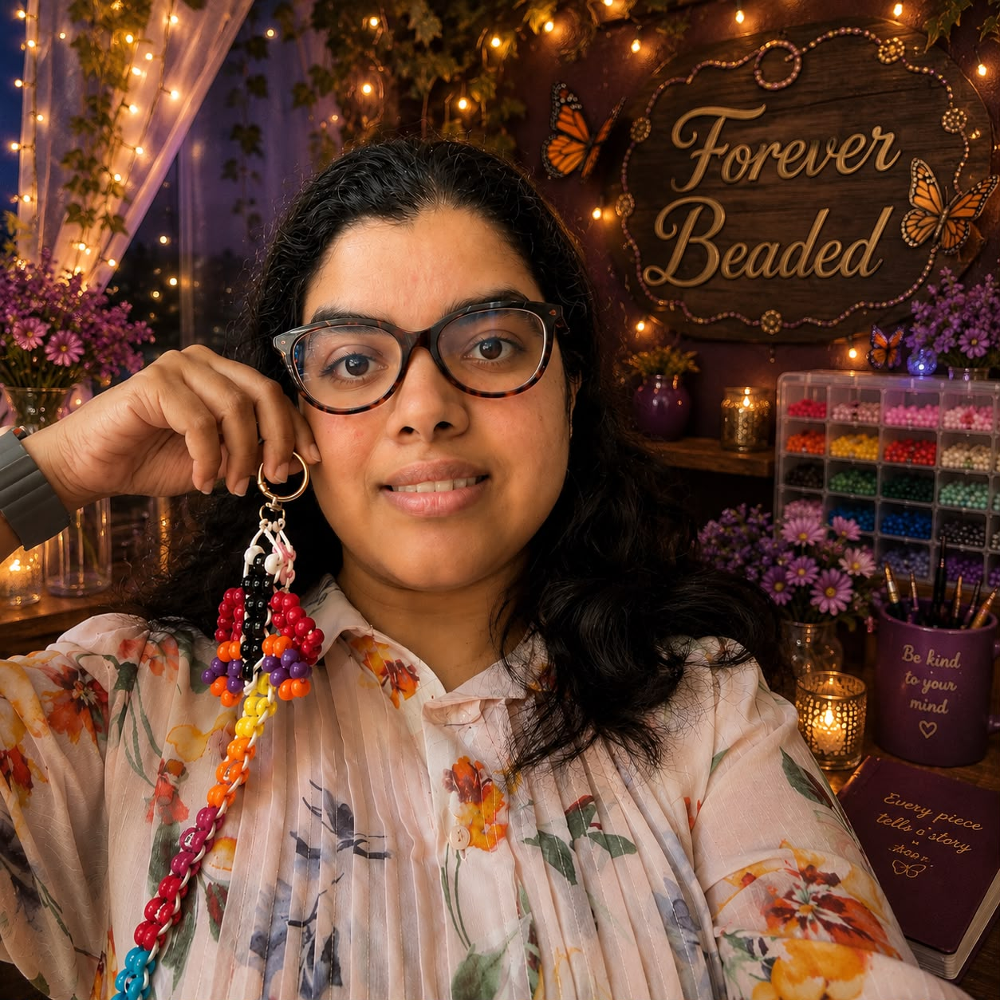

Meet the Maker
Every treasured piece begins with a heart behind the hands.
Forever Beaded grew from Gladlyn's love of creating meaningful keepsakes, small treasures made slowly, thoughtfully, and with heart.
Every piece is handcrafted bead by bead, with patience and care given to each colour, shape, and tiny detail. What begins as a handful of beads becomes something personal: a gift for someone loved, a reminder of a special moment, or a keepsake passed between family and friends.
For Gladlyn, the joy is not simply in making accessories. It is in creating pieces that carry stories, celebrate meaningful moments, and become treasured long after they are given.
With love,
Gladlyn
Let's create something meaningful together.Begin Your Story